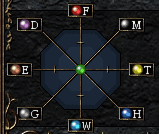
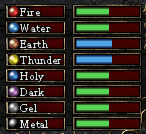

- 属性 -
・属性の種類・
シャドウフレアの世界には
| 炎 | 水 | 地 | 雷 | 聖 | 闇 | 透 | 機 |
の8つの属性が存在します。
怪物は属性をひとつ持っています。
炎は水に弱く、水は炎に弱いといったように属性は相対しています。
以下のように相対しています。
| 炎 | ＜＞ | 水 | ||
| 地 | ＜＞ | 雷 | ||
| 聖 | ＜＞ | 闇 | ||
| 透 | ＜＞ | 機 |
炎属性を持つ怪物には、プレイヤーの攻撃属性が水だと有利になります。
逆に炎属性をもつ怪物を相手にしたとき、
プレイヤーの炎属性が弱い場合には不利となります。
・プレイヤーの基本属性・

プレイヤーの基本属性はプレイヤー自身の（装備等の影響を受ける前の）属性です。
特別な薬を飲むことによってプレイヤーの基本属性は変化します。
・プレイヤーの属性・

プレイヤーの属性とは、プレイヤーの基本属性に装備の属性を付加したものです。
属性値は-10〜+10 の範囲で変動します。
各属性には、それぞれ以下のような特徴があります。
| 炎 | - 属性値が増加するごとに攻撃力が増加 | |
| 水 | - 属性値が増加するごとに防御力が増加 | |
| 地 | - 属性値が増加するごとに命中率が増加 | |
| 雷 | - 属性値が増加するごとに回避率が増加 | |
| 聖 | - 属性値が増加するごとに魔法攻撃力が増加 | |
| 闇 | - 属性値が増加するごとに魔法防御力が増加 | |
| 透 | - 属性値が増加するごとに魔法命中率が増加 | |
| 機 | - 属性値が増加するごとに魔法回避率が増加 |
逆に、属性がマイナスの場合には対応するパラメータが
減少することになるので注意してください。
また、火と水の属性値が両方とも最大値の場合などに
特別な効果がつくことがあります。
さがしてみてください。